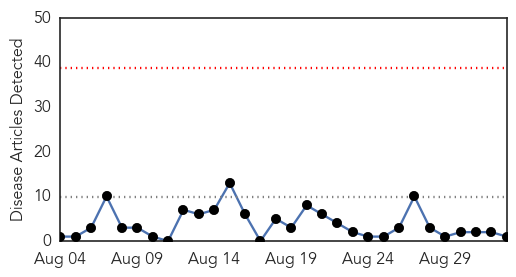
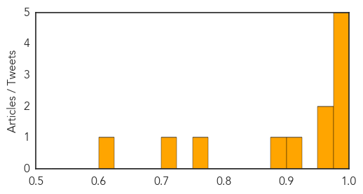

Chikungunya
30-Day Web Trend
0 alerts, 0 warnings

30-Day Twitter Trend
0 alerts, 0 warnings

Article Locations

Article Confidences

Top Articles:
Top Tweets:
-
No tweets found for Sep 02, 2014
Cholera
30-Day Web Trend
1 alerts, 0 warnings

30-Day Twitter Trend
5 alerts, 0 warnings

Article Locations

Article Confidences
Top Articles:
- 0.994
- Ghana seeks WHO help to curb cholera
- 0.992
- Haiti launches cholera vaccination campaign
- 0.992
- Gov’t requests oral vaccines from WHO against Cholera
- 0.987
- Cholera outbreak: GHS bans sale of food on streets
- 0.983
- South Sudan: Complex Emergency Emergency Appeal 6 months update Appeal n°: MDRCF017 - South Sudan
- 0.974
- Cholera outbreak: Gov’t turns to WHO for help
- 0.961
- Cholera patients allege extortion at Mamprobi Polyclinic
- 0.923
- UN launches in Haiti second phase of vaccination campaign against cholera — MercoPress
- 0.882
- Cholera hits Cape Coast, kills four
- 0.760
- In Malakal, South Sudan's Abysmal Tragedy Cannot Be Ignored
- 0.715
- Ebola: NOA Takes Sensitisation Campaign to Imo as Quarantine Centre is Established
- 0.623
- Rotary forms taskforce to combat cholera in VR
Top Tweets:
-
No tweets found for Sep 02, 2014